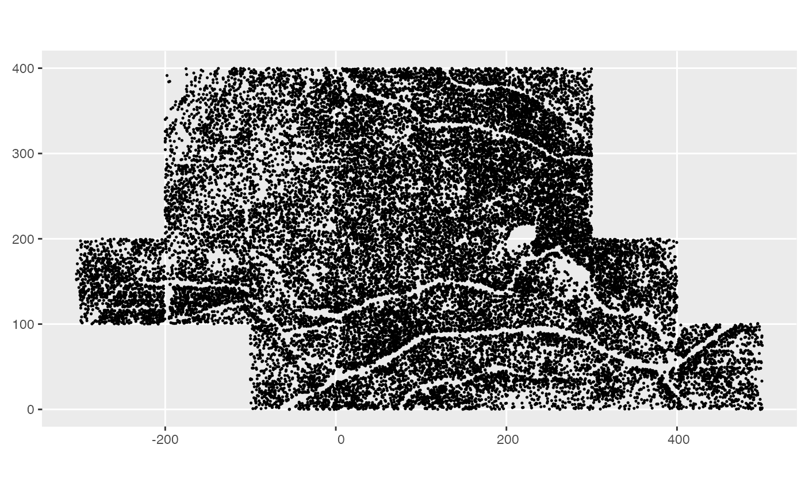

The Big Woods data come from three censuses of a 23 ha forest research plots. All free-standing vegetation greater than 1 cm diameter at 1.3 m height (diameter at breast height; DBH) were tagged, identified, spatially mapped and had their DBH measured. The original census took place in 2003 and covered only 12 ha. A second census took place from 2008-2010 and expanded the plot to its current 23 ha. In the first and second censuses trees larger than 3.1 cm DBH were included. Finally a third census took place in 2014. In this census trees larger than 1 cm DBH were included. In the second and third censuses the original trees were found, recorded for survival, remeasured, and new individuals were tagged. This data frame has data from the third census (2014).
census_2014_bw
A data frame with 48371 rows and 8 variables:
Tree identification number. This identifies an individual tree and can be used to connect trees between the two censuses.
Stem number for a multi-stemmed individual. For all trees this starts
at 1 and continues up from there. To uniquely identify a stem across the plot this
value must be combined with treeID.
Code for the species. See species_bw for scientific name.
Diameter at breast
x-coordinate meters from reference point
y-coordinate meters from reference point
Approximate date the stem was measured
Code for additional information on the stem: M means the main stem of the individual tree; AL means the stem is alive but leaning or completely fallen over; B means the stem is broken and over half the canopy is assumed to be missing; and R means the stem was lost, but the tag was moved to another stem greater than DBH cutoff, this stands for resprout.
This plot is part of the Smithsonian Institution's Forest Global Earth Observatory (ForestGEO) global network of forest research sites. For complete details on this dataset see its Deep Blue Data repository page.
Other Big Woods data:
census_2008_bw,
species_bw,
study_region_bw
Other example data objects:
blocks_ex,
census_1_ex,
census_2008_bw,
census_2_ex,
comp_bayes_lm_ex,
focal_vs_comp_ex,
growth_ex,
growth_spatial_ex,
growth_toy,
species_bw,
study_region_bw,
study_region_ex
library(ggplot2) library(sf) library(dplyr) # Convert all 2008 plot stems to sf object census_2008_bw_sf <- census_2008_bw %>% st_as_sf(coords = c("gx", "gy")) # Plot stems with plot boundary ggplot() + geom_sf(data = census_2008_bw_sf, size = 0.25)# Species-specific mortality between 2008 and 2014 censuses census_2008_bw %>% left_join(census_2014_bw, by = c("treeID", "stemID"), suffix = c("_2008", "_2014")) %>% mutate(mortality = ifelse(is.na(dbh_2014), 1, 0)) %>% group_by(sp_2008) %>% summarize(mortality = mean(mortality), n = n()) %>% arrange(desc(n))#> # A tibble: 36 × 3 #> sp_2008 mortality n #> <chr> <dbl> <int> #> 1 black_cherry 0.203 9079 #> 2 red_maple 0.112 5958 #> 3 witch_hazel 0.239 3481 #> 4 serviceberry 0.122 1506 #> 5 white_oak 0.0771 1180 #> 6 black_oak 0.203 1171 #> 7 pignut_hickory 0.0346 1128 #> 8 sassafras 0.316 735 #> 9 american_elm 0.0880 591 #> 10 black_red_oak_hybrid 0 536 #> # … with 26 more rows